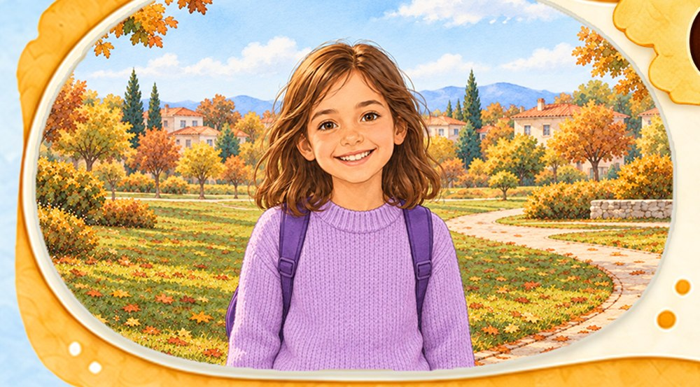
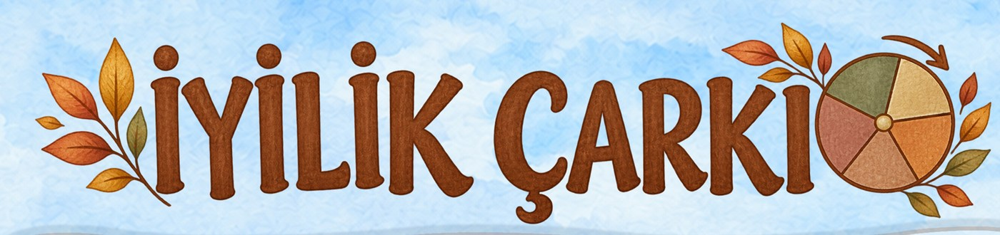
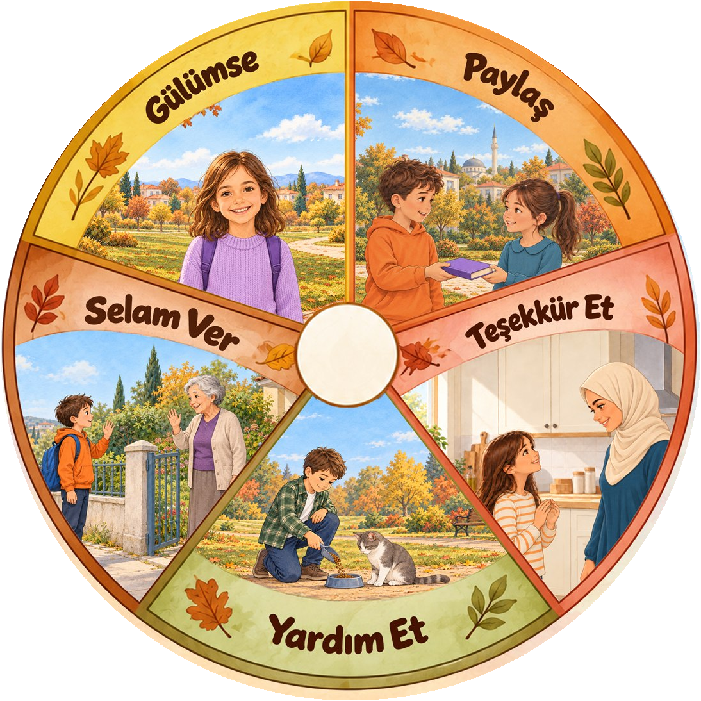

ÇARKIN SEÇİMİBugünün iyilik görevi
Gülümse
Bir görev seç, tamamladığında yıldızını yak.


Çarkı döndürmek için ortadaki Çevir düğmesine basın.

ÇARKIN SEÇİMİBugünün iyilik görevi
Bir görev seç, tamamladığında yıldızını yak.
İyilik günlüğüm